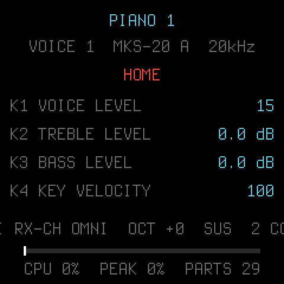
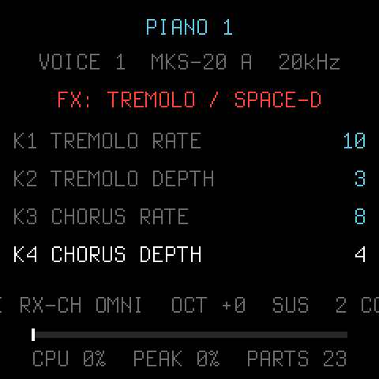
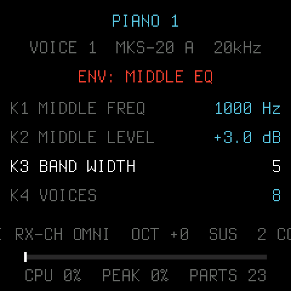

The screens
RDPNO has three pages, laid out after the MKS-20's front panel: HOME, FX and ENV. Each gives the four knobs (K1..K4) four of the MKS-20's edit parameters. Press HOME, FX or ENV, or turn SELECT, to change the page. The value turned last is shown in white. Everything but the pedal is kept in the FM-1's flash, two seconds after the last change. The settings are the same for every voice.
On every page
| Top | The voice (PIANO 1, E-PIANO 2, CLASSIC, ...), below it its number, the set (MKS-20 A, MKS-20 B, MK-80) and the rate the board runs that voice at (20 or 32 kHz). NO ROMS: LOAD THEM AT when the FM-1 holds no ROMs: load them. |
|---|---|
| MIDI line | RX-CH the receive channel (OMNI or 1..16), OCT the octave of the keys, SUS while the pedal is down, then 2 CORES (the sound chip's work is split over both cores; 1 CORE if the second one failed its test). E and a number instead: MIDI messages were lost (every note was released then). |
| Load bar | CPU how much of each audio block the board takes now (the bar; red above 80 %), PEAK the highest of the last two seconds (the white tick), PARTS how many of the sound chip's parts sound. A *: the brake is on, the faintest parts are left out for a moment so that it stays in time. |
| PRESETS | the voice | ALGORITHM | the MIDI receive channel |
|---|---|---|---|
| OCT- / OCT+ | the octave of the keys | PLAY | the sustain pedal, latched (lit while down) |
| MASTER | the volume | MIDI in | notes, CC 64, CC 120/123, program change (the voice) |
HOME

| K1 | VOICE LEVEL 0..15, the voice's volume. |
|---|---|
| K2 | TREBLE LEVEL -10.5..+10.5 dB in 1.5 dB steps: a gentle shelf, its corner at 4 kHz (full at about 10 kHz). |
| K3 | BASS LEVEL -10.5..+10.5 dB: a shelf with its corner at 200 Hz (full at about 100 Hz). |
| K4 | KEY VELOCITY 1..127: how hard the FM-1's own keys play (they feel none). MIDI notes bring their own. |
FX: TREMOLO / CHORUS

| K1 | TREMOLO RATE 1..15. |
|---|---|
| K2 | TREMOLO DEPTH 0..15, 0 = off, 1.5 dB a step. A stereo tremolo: the two sides swing in antiphase. |
| K3 | CHORUS RATE 1..15. |
| K4 | CHORUS DEPTH 0..15, 0 = off. |
| FX | pressed again on this page: the chorus type, SPACE-D (Roland's digital Dimension-D-style chorus, as rdpiano_juce has it) or BBD (a bucket-brigade-style chorus). The title says which. |
ENV: MIDDLE EQ

| K1 | MIDDLE FREQ 400, 560, 770 Hz, 1, 1.4, 2, 2.8 or 4 kHz, as on the MKS-20. |
|---|---|
| K2 | MIDDLE LEVEL -10.5..+10.5 dB: a peak at that frequency. |
| K3 | BAND WIDTH 1..8, higher is narrower. |
| K4 | VOICES 4..10 (8 by default): how many notes the board plays at once, its own voice stealing among them. Fewer: less load (with the pedal down, every key struck keeps a voice). |
Loading the ROMs
While the load page (or the installer) sends the ROMs, the FM-1 is silent and shows LOADING THE ROMS with the percentage and DO NOT UNPLUG; STOPPED: TRY AGAIN if nothing has come for ten seconds. At the end it shows ROMS LOADED, the set, and restarts with it.